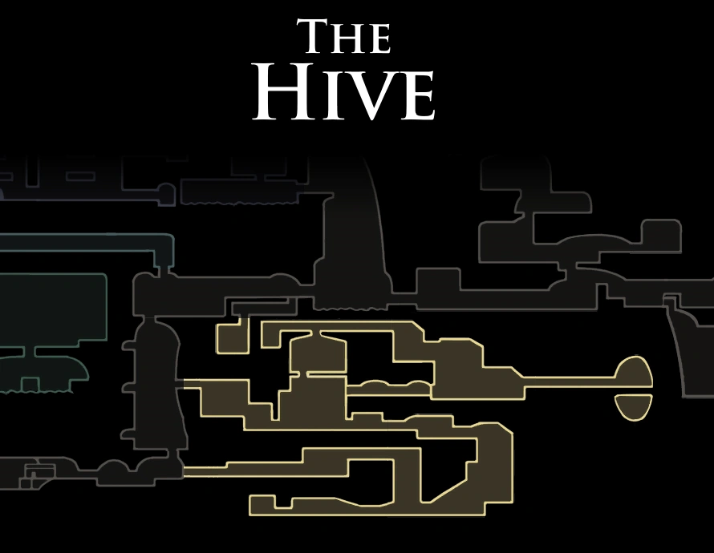

Hive Queen Vespa
A antiga rainha da Colmeia. Seu corpo gigantesco jaz na arena do Hive Knight; morreu por ter crescido demais para sair de seus domínios.

A Colmeia é habitada por guerreiros aéreos governados por uma rainha. Embora exista dentro de Hallownest, a colônia sempre ficou à parte dos assuntos do reino e isolada das terras do Rei Pálido.
Durante o reinado do Rei Pálido, as abelhas selaram todos os acessos externos, exceto pelas patrulhas ocasionais de Hivelings. A rainha, Vespa, morreu por ter crescido demais para sair de seus domínios. Sem ela, a Colmeia enfraqueceu e acabou dominada pela Infecção, mas continua mais ordenada que outros grupos infectados.
A Colmeia era famosa por produzir o Hivesteel, um aço raríssimo e resistente. A produção e os segredos de sua fabricação se perderam, talvez junto com os habitantes.
A antiga rainha da Colmeia. Seu corpo gigantesco jaz na arena do Hive Knight; morreu por ter crescido demais para sair de seus domínios.

Leal cavaleiro defensor da Colmeia, que ataca com ferrões e enxames de abelhas.

Abelhas blindadas que voam rápido e atacam com ferrões.